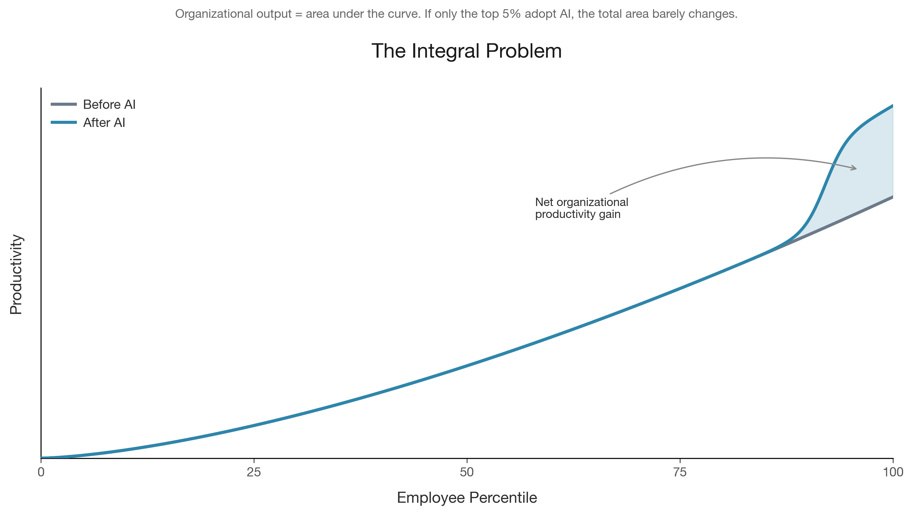
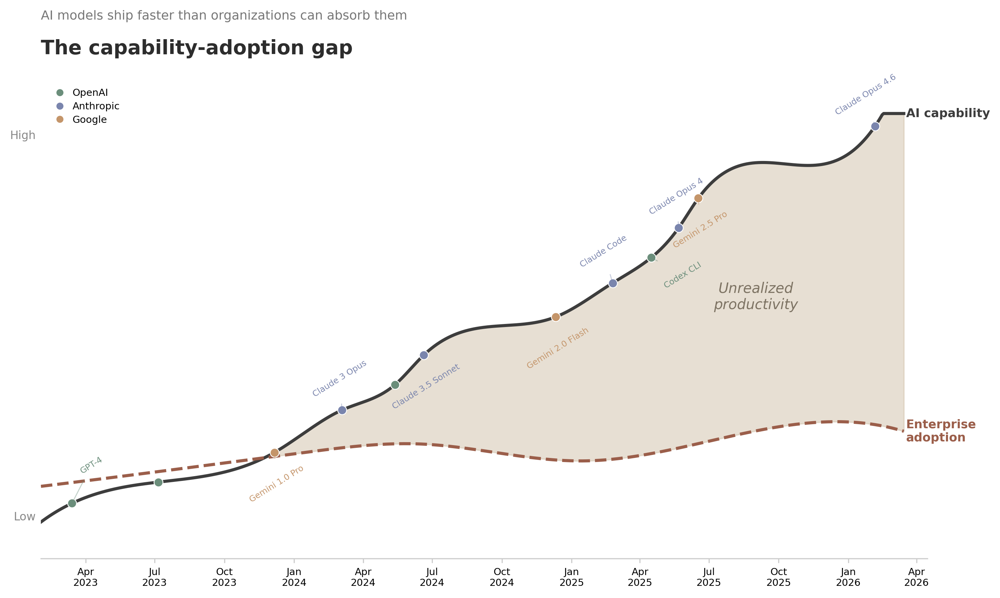

I've spent the last year working across multiple engineering and product teams at a large tech company. During that time, GPT-4o shipped. Claude Opus 4 shipped. Claude Code, Gemini 2.5 Pro, GitHub Copilot CLI, OpenAI's Codex CLI. The tooling got dramatically better every quarter.
And still, at most 1 in 20 engineers I worked with truly adopted AI into their workflows.
Not 1 in 20 across the whole company. 1 in 20 among core engineering and product teams. The people who should be first. The people who build software for a living.
That ratio haunts me. Because the tools work. I know they work. I use them every day. But almost nobody around me does. And that means, at the organizational level, AI is barely moving the needle.
Think about organizational productivity as a curve. On the x-axis, you have employees ranked by percentile. On the y-axis, output. The total productivity of the organization is the area under that curve. The integral.
Now imagine AI shifts the top 5% of that curve dramatically upward. Those 1-in-20 power users become significantly more productive. Great for them. But look at the shaded area between the old curve and the new one. It's tiny. The integral barely changes.
This is the core problem. Organizational output is not determined by its best performers. It's determined by the aggregate. By the full distribution. And if 95% of that distribution doesn't move, neither does the organization.
The math is simple and unforgiving. A 3x productivity gain for 5% of your workforce is a 10% gain for the organization. That sounds decent until you realize these tools could deliver a 3x gain for everyone. The gap between what's possible and what's happening is enormous.
The timeline tells the story. Every few months, a new model ships that's meaningfully better than the last. The capability curve keeps climbing. But the adoption curve stays flat.
The data backs this up. According to McKinsey's 2025 State of AI survey, 88% of organizations say they "use AI." But only 7% have fully scaled it across their operations. That gap between saying and doing is where the productivity gains go to die.
It gets worse. Worklytics' 2025 AI Adoption Benchmarks found that 74% of companies show no tangible value from their AI investments. Not negative value. Just nothing measurable.
The Anthropic Economic Index measured AI usage patterns across enterprise deployments and found a Gini coefficient of 0.84 to 0.86. For context, a Gini of 1.0 means one person does everything and everyone else does nothing. A Gini of 0.85 is extreme concentration. A small number of power users account for the vast majority of AI usage. Frontier workers in their dataset sent 6x more messages than the median enterprise user.
And the trend is going the wrong direction. According to a 2025 survey from Lucidworks, 42% of companies abandoned most of their AI initiatives in 2025, up from 17% in 2024. Companies aren't ramping up. They're giving up.
The gap between what's available and what's adopted is widening. Not closing.
I've watched this play out up close. Five problems keep showing up.
I consider myself AI-fluent. I've been building with these tools since GPT-3. And even for me, getting truly productive took significant effort.
I got lucky. During paternity leave, I had unstructured time to experiment. I'd hold my son in one arm and voice-transcribe prompts with the other. That sounds ridiculous, but it worked. Hours of low-stakes experimentation, trying things, failing, adjusting. That's what it takes.
Most employees don't have that. They have meetings, deadlines, and sprint commitments. They get maybe 30 minutes to try a new tool before the next Slack message pulls them away. That's not enough.
Being truly productive with AI means being comfortable at the command line. It means browser automation, piping outputs between tools, hacking things together. GitHub Copilot CLI, Claude Code, Codex CLI: these are where the real leverage lives. But for most knowledge workers, that's an intimidating bar. And nobody is helping them clear it.
Most people's impression of AI comes from public failures. The lawyer who cited fake cases. The company that shipped AI-generated slop. The chatbot that told someone to eat rocks.
Can you blame someone for not wanting to stake their reputation on a tool they associate with embarrassing output?
Here's the thing: AI slop is a human problem, not an AI problem. It comes from people who don't review AI output. People who copy-paste without reading. People who were never trained on how to prompt well or how to verify results. This problem has existed forever. AI just makes it faster to produce bad work at scale.
The fix is straightforward. Build review processes. Train people on what good AI-assisted work looks like. Show them, with real examples from their own domain, that the output is good when the process is good. You have to break the association between "AI" and "slop" before anyone will invest their time.
Every AI training I've attended was a marketing person demoing tools that employees aren't allowed to use.
I'm not exaggerating. The demos are flashy. Someone shows ChatGPT writing a poem or summarizing a document. The audience nods politely. Then everyone goes back to their desks and nothing changes. Because the demo didn't teach them how to integrate AI into their workflow. It showed them what's theoretically possible in a vacuum.
Real training looks nothing like this. Real training means hands-on workshops where people build their own workflows with their own data. It means pairing AI-fluent employees with those who aren't. It means giving people time (real, protected, calendar-blocked time) to experiment and fail. Not a 45-minute lunch-and-learn.
Companies love to shove their own half-baked AI wrappers down employees' throats. "Use our internal copilot. It's approved by security." The internal copilot is a thin wrapper around a rate-limited API with a clunky interface and a six-month-old model.
Meanwhile, the tools that actually work (Claude Code, Cursor, GitHub Copilot) are either blocked or exist in a gray area. So what happens? Shadow AI. Employees use the good tools anyway, just on their personal machines, outside the security perimeter.
This is an own goal. If your employees are using unauthorized tools, that's a signal. The sanctioned tools aren't good enough. Fix the tools, don't punish the behavior.
There's a regulatory parallel here. The US leads in AI development partly because of a lighter regulatory touch compared to Europe's more restrictive approach. Over-regulation inside organizations has the same chilling effect. When you make it hard to use AI, people either don't use it or use it outside your visibility. Neither outcome is what you want.
Knowledge work is individual. The way I write code is different from how you write code. The way I draft documents, run analyses, manage projects: all different. There is no single AI workflow that fits everyone.
Enterprise tools are designed as if one workflow works for all. It doesn't. A product manager needs AI for different things than a backend engineer, who needs it for different things than a data scientist.
The only way to make AI truly personal and productive is to get into the command line. To become a bit of a hacker. To chain tools together in ways that fit your specific work. That's a hard sell in a corporate environment that values standardization. But standardization is exactly the wrong instinct here.
I've laid out the problem. Here's what I'd do about it, starting this week.
For new projects, default to the AI-assisted approach. Don't make it optional. But hold quality to the same bar as before. The goal is not to ship faster. The goal is to ship the same quality, faster, once people are up to speed.
Here's the part most managers skip: you have to budget for a temporary productivity dip. You cannot mandate AI and then penalize people for being slower while they learn. That kills adoption dead.
John Ousterhout from Stanford calls AI a "tactical tornado." It lets you move fast, but speed without review produces slop. The fix is active review and tight feedback loops, not pulling back from AI. Quality control isn't optional. It's the entire point. AI without review is like shipping code without tests.
Stop doing demo-driven AI training. Today. It's worse than useless because it creates the illusion that you've invested in adoption.
Real training means:
I became fluent with AI during paternity leave because I had unstructured time. You can't give everyone paternity leave, but you can carve out space for the same kind of experimentation. Two hours a week. A Friday afternoon. Something.
The real productivity unlock comes from tools that work in the terminal. GitHub Copilot CLI, Claude Code, OpenAI Codex CLI, Cursor. These tools integrate into the actual development workflow. They don't live in a separate browser tab you forget about.
Here's a concrete example. Two years ago, I drove a customer communication program reaching out to hundreds of one-off customers at a large tech company. It was slow, imprecise, and mostly ineffective. We were crafting generic messages and hoping they landed. Fast forward to today: using AI, the same type of campaign can be surgical and prescriptive. Tailored outreach, specific recommendations per customer, context-aware follow-ups.
But it wasn't easy. It took trial and error. Hours of prompt iteration. Building custom pipelines. The point is: the effort pays off, but you have to invest it. The enterprise wrappers that promise "AI in a box" aren't there yet. You have to get down and dirty with tools that work.
Stop prescribing. There is no one-size-fits-all AI workflow. A mandate to "use tool X for task Y" will fail because it ignores how individual knowledge work actually is.
Instead: give people time and explicit permission to find their own use cases. Celebrate when someone discovers an unconventional workflow. Share wins across teams. Let adoption be organic, messy, and personal.
Stop battling shadow AI. You will lose.
If employees are going around your approved tools, that tells you something important about your approved tools. Instead of locking things down further, solve for data security and let people experiment.
Trust your employees. Invest in upleveling them while keeping data safe. Build guardrails, not gates. There's a meaningful difference.
Organizations that over-regulate AI internally will slow down, just like countries that over-regulate it nationally. The companies that win will be the ones that figured out how to say "yes, and here's how to do it safely" instead of "no."
This is a generational opportunity. The tools are here. They work. The bottleneck is not technological. It's organizational. It's cultural. It's about belief, patience, and trust.
The gap between AI capability and enterprise adoption is widening every month. Every model release makes the tools more powerful. But none of that matters if only 1 in 20 people use them.
Here's what to do Monday morning:
The integral only changes when the whole curve moves. Not just the tail.